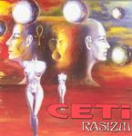

Home Artist links Label link

Ceti - Razism
| Artist: | Ceti |
| Title: | Razism |
| Label: | Oskar 1020 CD |
| Length(s): | 77 minutes |
| Year(s) of release: | 1994/2004 |
| Month of review: | [04/2006] |
Sample this album in MP3
The music
Was their debut in the symphonic hardrock vein, similar in style
to say Omega in their later years, Razism sees the band moving
into harder, less melodious and complexer territory. Especially the
guitar is played in a more frantic, effect rich fashion. The vocalist
continues to sing most of his lyrics in typical hard rock fashion, and
in Polish. This does not mean that the band does not take it easy
sometimes as on the moody opening Milosc, Nienawisc, Smierc. It also
shows a vocalist singing from the heart. The album also has an unlikely
cover in the form of Somewhere Over The Rainbow, played in icky
guitar hero style. The album also features the classically styled
Epitafium, which later turns for the rock again, but the first part
could have been from a progrock band.
Following Razism on this cd, there are six live tracks,
among which the nine minutes of Satan's Cavalery Part III. This song opens
in epic style with plenty of keyboards. Indeed, the band can be likened
here to Iron Maiden's more epic side. The keyboards are on the cheap side.
Surprisingly, the title song of this record was also on the debut of the
band. On the whole, I liked it significantly less than the debut, which had
both more melody and charm.
© Jurriaan Hage